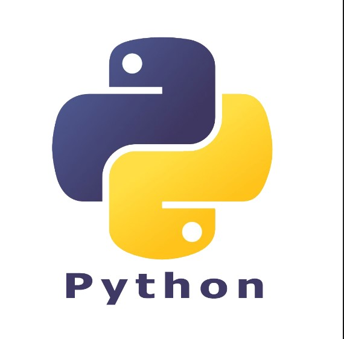

Python is a high-level, interpreted programming language known for its simplicity, readability, and versatility. Created by Guido van Rossum and first released in 1991, Python has become one of the most popular programming languages in the world, widely used in various domains such as web development, data analysis, artificial intelligence, scientific computing, and automation. One of Python's defining features is its clear and concise syntax, which emphasizes readability and reduces the amount of code required to express ideas. Python's use of whitespace indentation to delimit code blocks promotes a clean and organized coding style, making it easy for developers to write and understand code. Python's extensive standard library provides a wide range of modules and packages that simplify common programming tasks, such as file I/O, networking, database access, and text processing. Additionally, Python's ecosystem includes a vast collection of third-party libraries and frameworks, such as Django, Flask, NumPy, Pandas, TensorFlow, and scikit-learn, which further extend its capabilities and support rapid development. Python's interpreted nature enables developers to write and execute code interactively, facilitating rapid prototyping and experimentation. Its dynamic typing and automatic memory management alleviate the burden of low-level memory management tasks, allowing developers to focus on solving problems and building applications. Overall, Python's simplicity, readability, extensive library support, and vibrant community make it an ideal choice for beginners and experienced programmers alike, driving its widespread adoption and continued growth in the ever-evolving landscape of technology and software development.
Features of Python
- Easy to read and understand
- Interpreted language
- Object-oriented programming language
- Free and open-source
- Versatile and Extensible
- Multi-platform
- Hundreds of libraries and frameworks
- Flexible, supports GUI
- Dynamically typed
- Huge and active community
Why learn Python?
- Ease of Learning
- Versatility and Flexibility
- Strong Community Support
- Career Opportunities
- Data Science and Machine Learning
Advantages of Python
- Easy to learn, read, and understand
- Versatile and open-source
- Improves productivity
- Supports libraries
- Huge library
- Strong community
- Interpreted language
- Restrictions in design
- Memory inefficient
- Weak mobile computing
- Runtime errors
- Slow execution speed
To learn more about Python Language, here are some resources:
Python Language ONLINE MATERIAL